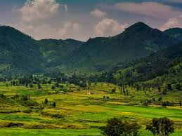

Araku Valley
Araku Valley is a picturesque hill station located near Visakhapatnam (Vizag), offering stunning views of lush greenery, coffee plantations, and tribal culture. It is known for its pleasant climate and scenic train journey known as the Araku Valley Railway.
Location: Andhra Pradesh, India
Activities: Sightseeing, coffee plantation tours, tribal museum visits, nature walks
Transportation: Accessible by road from Vizag, or enjoy the scenic train journey from Visakhapatnam to Araku.